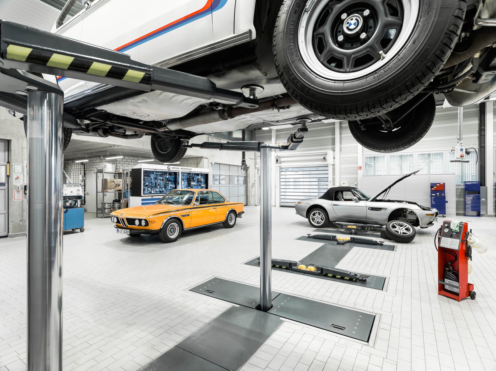
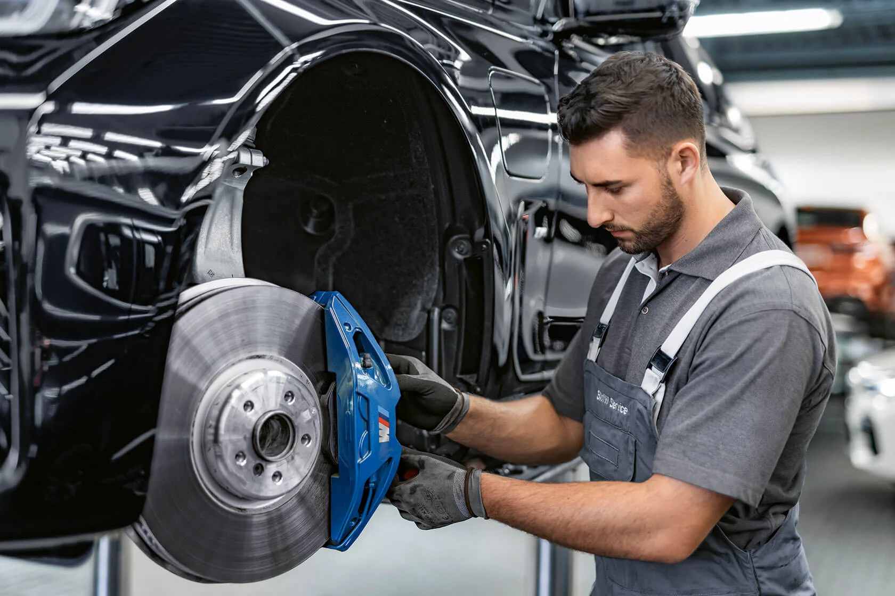
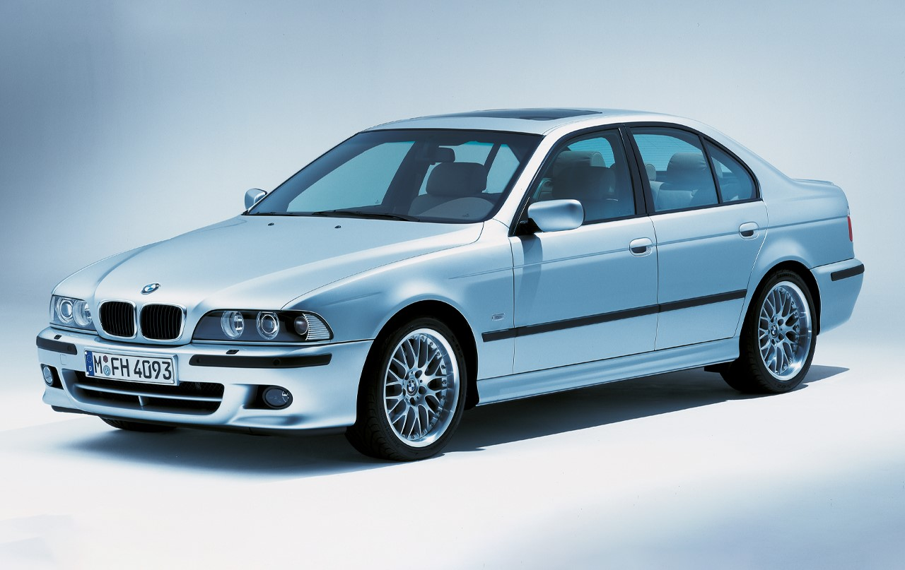

Održavanje BMW vozila
Održavanje je važan dio svakog automobila, a posebno vozila koja imaju više tehnologije i složeniju konstrukciju. Redovito održavanje može produžiti vijek trajanja vozila i smanjiti mogućnost većih kvarova.

Redoviti servis
Redovita zamjena ulja, filtera i drugih potrošnih dijelova važna je za pravilan rad vozila. Time se čuva motor i smanjuje mogućnost skupljih problema.
Praćenje stanja vozila
Važno je obratiti pažnju na neobične zvukove, upozorenja na ploči s instrumentima i promjene u radu automobila. Rano prepoznavanje problema može spriječiti veći kvar.
Kočnice i gume
Ispravne kočnice i kvalitetne gume bitne su za sigurnost, bez obzira na marku vozila. To su osnovni dijelovi koji izravno utječu na sigurnost vožnje.
Troškovi održavanja
Kod BMW-a održavanje može biti skuplje nego kod nekih jednostavnijih vozila, ali pravilna i redovita briga dugoročno može spriječiti mnogo veće troškove.

Zašto je održavanje važno?
Sigurnost
Ispravno održavano vozilo sigurnije je za vozača, putnike i ostale sudionike u prometu.
Pouzdanost
Redovito održavanje smanjuje mogućnost neplaniranih kvarova i problema tijekom vožnje.
Dugotrajnost
Vozilo koje se redovito održava može dulje zadržati svoju vrijednost i ispravnost.

Što korisnik treba zapamtiti?
Održavanje nije nevažno
Kod vozila poput BMW-a održavanje ne treba promatrati kao sporednu stvar, nego kao sastavni dio odgovornog korištenja vozila.
Dobro stanje smanjuje rizik
Vozilo koje se redovito kontrolira i servisira ima veće šanse ostati pouzdano, sigurnije i dugoročno isplativije.